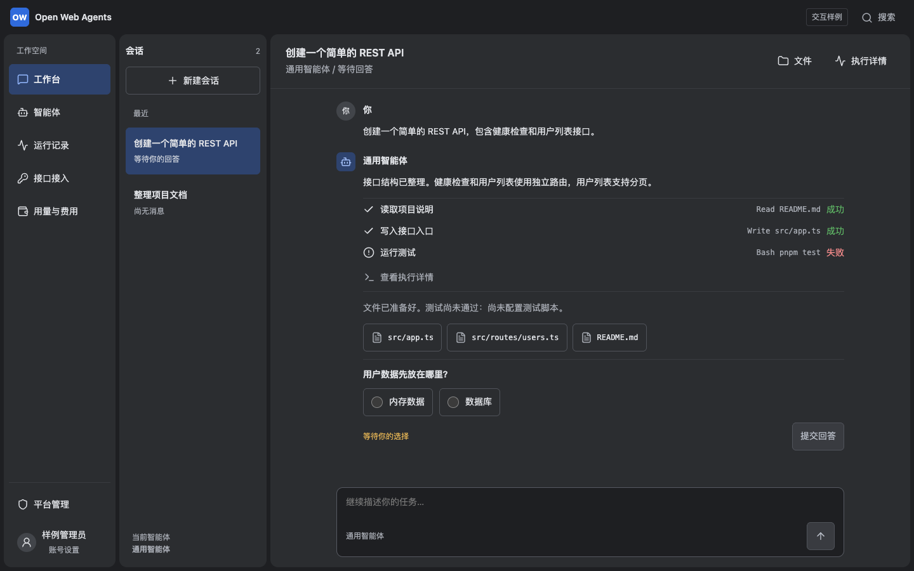
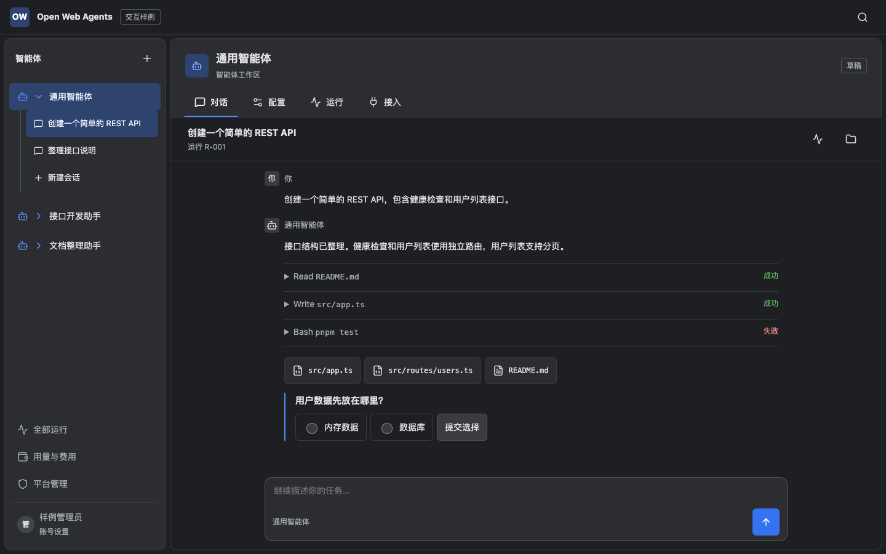
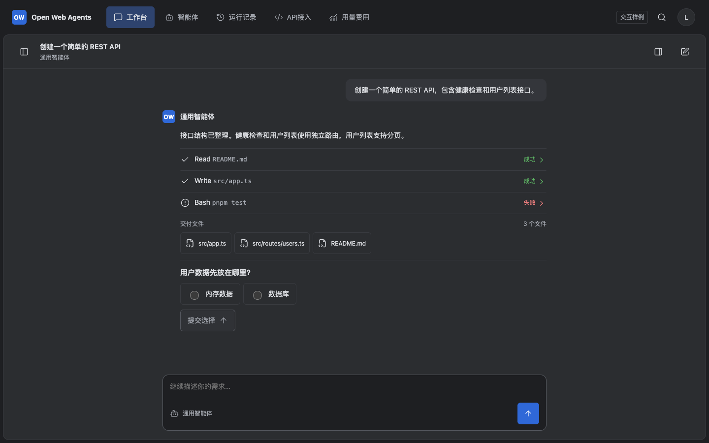

A
任务分区
工作台、智能体、运行、API、费用各有明确入口。对话详情按需展开，取消重复标签和窗口条。

更容易找到功能。 适合同时服务日常使用者、创建者和管理人员。跨区域时需要保留智能体上下文。
三个可操作原型，使用同一套内容、深灰色板和圆角。比较任务入口、智能体配置和执行详情的位置。

工作台、智能体、运行、API、费用各有明确入口。对话详情按需展开，取消重复标签和窗口条。

先选智能体，再进入它的对话、配置、运行和接入。会话属于智能体，全局费用与管理单独放置。

顶部切换任务，主屏留给对话。历史会话和执行详情分别按需打开，常驻控件最少。
| 任务 | A 任务分区 | B 对象工作区 | C 聚焦对话 |
|---|---|---|---|
| 继续历史对话 | 会话列表直接选择 | 智能体下选择会话 | 打开历史抽屉后选择 |
| 修改智能体 | 智能体区域内选择与编辑 | 当前智能体切到配置 | 顶部进入智能体页编辑 |
| 查看执行细节 | 对话内打开详情 | 当前会话打开详情 | 对话内打开详情抽屉 |
| 接入一个智能体 | API 接入选择智能体 | 当前智能体切到接入 | 顶部 API 接入选择智能体 |
| 费用与管理 | 任务导航下独立区域 | 对象树底部全局区域 | 顶部费用与账号菜单 |